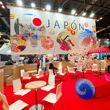

Explora la magia de Expo Vacaciones
Aquí te mostramos algunos de los mejores momentos y rincones del evento: stands, destinos, actividades y sonrisas. Cada imagen refleja el espíritu de los viajes, la diversidad cultural y la pasión por descubrir el mundo.

Todas las fotografías pertenecen a la edición anterior del evento.
¡Ven este año y forma parte de la próxima galería de Expo Vacaciones 2025!